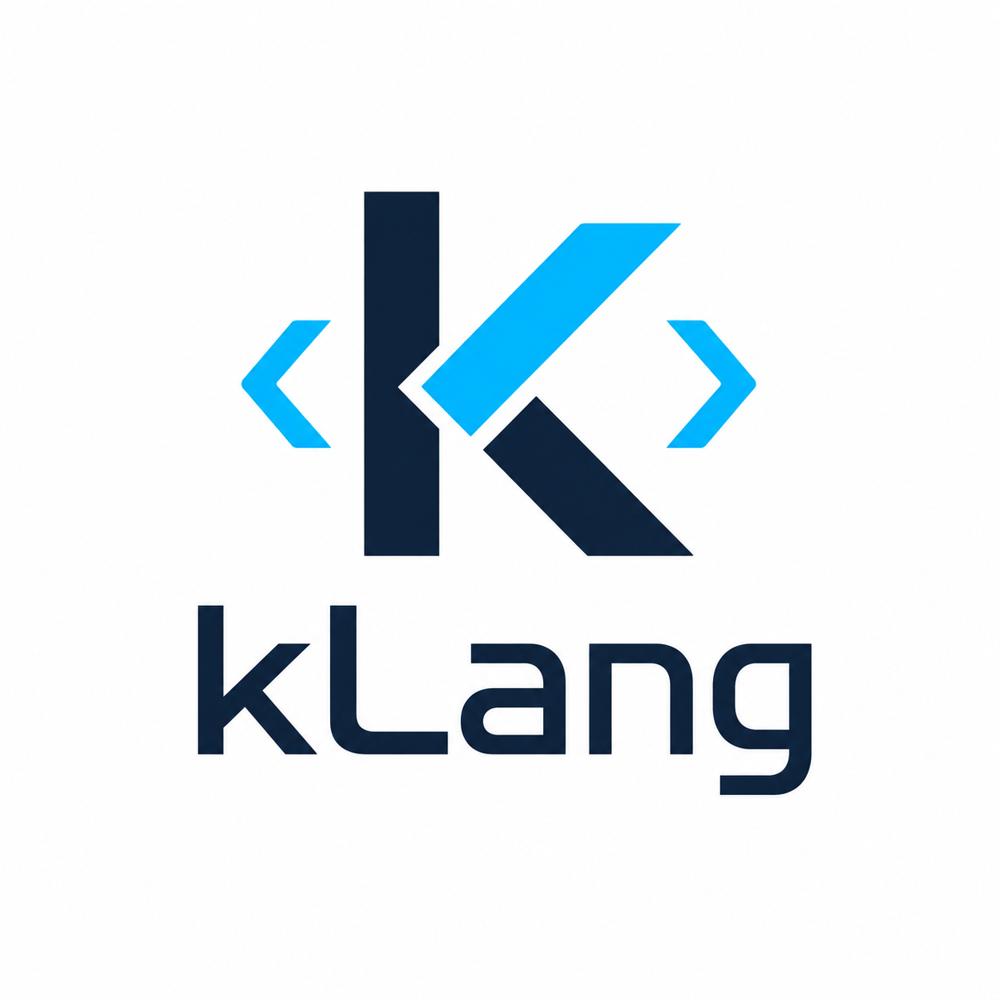

Typed bindings
Immutable-by-default variables, explicit `mut`, typed `local`/`global`, inferred `let`/`val`/`var`, strict `const`, destructuring, discard `_`, and lazy declarations.

kLangExperimental language runtime
It brings together a lexer, parser, module resolver, semantic checker, interpreter runtime, standard library, examples, editor extensions, source-aware diagnostics, caching, and early standalone/browser packaging.
Quick start
Commands run from the repository root. Successful checks and runs can write a `.klang-cache` entry so repeated startups can skip module resolution and type checking when sources are unchanged.
go run . --helpgo run . new examples/myproject
go run . new examples/myproject --entry=["Process","Int"]go run . check examples/helloworld
go run . run examples/helloworld
go run . run examples/commandlinearena demo 100go run . doc '--sourcefile=[examples/helloworld]' --out=helloworld-docs.htmlgo run . serve examples/helloworld --port=8080
go run . package examples/helloworld --backend=WASM --serve --out distLanguage surface
kLang is still experimental, but its core now includes a broad set of language mechanisms that work together across parser, checker, runtime, stdlib, and browser packaging.
Immutable-by-default variables, explicit `mut`, typed `local`/`global`, inferred `let`/`val`/`var`, strict `const`, destructuring, discard `_`, and lazy declarations.
Builtins include `List`, `Map`, `Set`, `Table`, `Option`, `Result`, `Complex`, `SIMD`, `Iterator`, `Coroutine`, `Thread`, `Atomic`, `Context`, `ErrorContext`, and runtime `Type` metadata.
First-class functions, lambdas, callbacks, inline candidates, pass-by-value defaults, explicit `ref`, named returns, tuple-style multiple returns, `defer`, and `run` blocks.
Use `restrict[...]`, named constraints such as `numeric`, `comparable`, `hashable`, `iterable`, `allocator_like`, and trait-bound parameters such as `T Printable`.
Shared selector protocols expose `.count`, string and char case conversion, and integer `.times(callback)` while alias functions can define custom type-like objects and extension methods.
Source-aware `Context`/`ErrorContext`, null-aware helpers, `assert`, `report`, `debug_stack`, `debug_state`, move/copy/clone semantics, and copy-on-write aggregate storage.
Example
This example shows enums, options, collection protocols, integer callbacks, state/debug helpers, and ordinary checked functions.
val appName = "demo";
const intSize = Int.sizeof;
enum NetworkState {
Idle;
Connecting = 10;
Connected;
Failed;
}
function Add(left : Int, right : Int) : Int {
local Int total = left + right;
return total;
}
function RememberIndex(index : Int) : Int {
return index;
}
function Main() : Int {
let maybeCount = Some(41);
let mut total = Add(maybeCount.value, 1);
local NetworkState state = NetworkState.Connected;
if state == {
case NetworkState.Connected:
print(appName, "connected", total);
case:
print(appName, "other state", state.name);
}
local Int itemCount = [10, 20, 30].count;
local String loud = "hallo".uppercase();
local Int lastIndex = 5.times(RememberIndex);
local List[Table] states = debug_state();
print(loud, itemCount, lastIndex, intSize, len(states));
return total;
}Compiler and runtime
Module, parse, type, runtime, backend, and WASM failures are shaped into `ErrorContext` records with phase, file, line, column, rule, source line, message, and hint.
`check` and `run` persist source-fingerprint cache entries in `.klang-cache`, invalidated by source edits, entry changes, or `--raw-lang` changes.
The checker records compile-time symbol state, and the runtime records `define`, `bind`, `assign`, `move`, and `return` transitions exposed through `debug_state()`.
WASM bundles include `klang.wasm`, `wasm_exec.js`, `klang_browser.js`, `index.html`, a README, source files, and a `klang-build.json` manifest.
Command line
| Command | Purpose | Example |
|---|---|---|
new | Create a folder project. | go run . new examples/app |
check | Resolve, type check, and parse. | go run . check examples/helloworld |
run | Check and execute with optional `Args`. | go run . run examples/helloworld |
doc | Generate HTML docs with declaration cards and source chapters. | go run . doc '--sourcefile=[examples/helloworld]' |
package | Write a compact project bundle. | go run . package examples/helloworld --backend=WASM |
serve | Package and serve browser WASM output. | go run . serve examples/helloworld --port=8080 |
test | Discover and check multiple Klang programs. | go run . test examples --run |
file | Print a source file with line labels. | go run . file examples/helloworld/first.klang |
Standard library
The stdlib is intentionally small and still evolving. Module resolution can selectively load only referenced functions, while `module_caller(call_entire_module : True);` opts into complete module loading.
Function-style list helpers: append, clear, copy, count, extend, index, insert, pop, remove, reverse, sort.
Runtime-backed `Format` and `Printf` wrappers using `%` placeholders and `%%` escapes.
Length, prefix/suffix checks, contains, split, join, replace, slice, trim, and defaults.
Escaped text, attributes, fragments, full documents, and named browser-oriented HTML tags.
JSON formatting, checked encoding helpers, maps, key/value lists, and custom encoder callbacks.
Worker thread helpers around `spawn`, `join`, and `thread_status`.
Stable hashing helpers for hashable values.
List-backed array-style helpers plus stack, queue, and ordered map aliases.
System descriptors for default program, workspaces, build metadata, and future host integration.
Documentation map
The website summarizes the active surface. The markdown files remain the source of truth for detailed design and syntax notes.